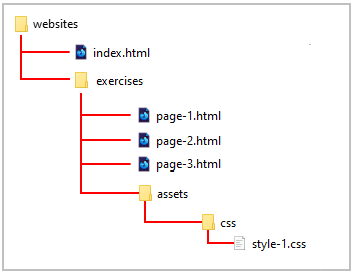
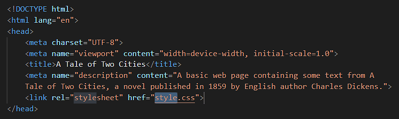
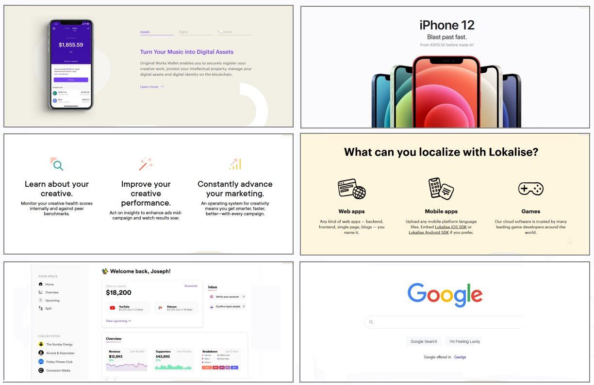

Learning Goals
At the end of this Tutorial you will be able to:
- Understand the basic structure of a CSS stylesheet.
- Understand these CSS terms: selector, declaration block, style rule, property and value.
- Recognise the most commonly used CSS properties in web design.
- Download a CSS file from the Internet.
- Link HTML web pages to CSS stylesheet files.
- Update the style rules in a CSS file and view the effect on a linked web page.
Creating your assets and css sub-folders
Web designers use the word assets to describe those files which are used by web pages, but which are not themselves HTML files. Assets typically include stylesheets (CSS files), images (JPG or PNG files), audio tracks (MP3 files), videos (MP4 files), Adobe Acrobat documents (PDF files) and JavaScript code (JS files).
In a well-organised website structure, asset files are stored in various sub-folders of a main assets sub-folder.

Before downloading the sample stylesheet file for this Tutorial, you need to create a sub-folder structure to store them.
For Microsoft Windows users, here are the steps:
- Open File Explorer, display your ‘main’ 📁 websites folder and then your 📁 execises sub-folder inside it.
- In the blank space at the right side, right-click and choose New | New folder from the context menu.

- Give your new folder the name assets.


DO NOT type upper-case letters. Type assets.
DO NOT type 'Assets' or 'ASSETS'.
- Next, click your new 📁 assets sub-folder folder to select it.
- Right-click anywhere in the empty sub-folder and choose New | New folder from the context menu.
Give your new sub-folder the name css.
DO NOT type upper-case letters. Type css.
DO NOT type 'Css' or 'CSS'.

✅ That’s it. You have now created a sub-folder structure to store the stylesheet file you will download.
Downloading your sample CSS file
Now you will download a stylesheet file for your sample page-1.html web page. Here are the steps.
- In your web browser, click the following link: style-1.css This stylesheet file will open in a new tab of your web browser.
- Right-click anywhere in the browser window, and from the context menu, choose Save as... (Chrome or Brave) or Save Page As... (Firefox).

- Save the style-1.css stylesheet file in your 📁 websites/exercises/assets/css sub-folder.

- Check that your 📁 websites sub-folder structure now looks as shown below.

You will now work with this CSS file along with the corresponding HTML web page file.
Applying your own styles to your web pages
In the previous Working with HTML Tutorial, you added markup tags such as <h1> and <h2> to the text of your sample HTML files.
When you saved your files and displayed them in a web browser, you could see the text styled with headings, sub-headings and paragraphs.

Where did these styles come from?
The answer is that these are default styles created by the web browser – Google Chrome, Mozilla Firefox or whatever.
To create and apply your own styles to a web page, you need to follow these steps:
- Create a CSS file (stylesheet).
- In the CSS file, create your styles for headings, paragraphs and so on.
- And, in the <head> of your web page, add a link to your CSS file.
The structure of a CSS file
Some CSS files are only 30-50 lines long. Others may have as many as 50,000 lines. In every case, they all have a similar structure.
All CSS files consist of so-called selectors. Each has a selector name (such as h1 or p) that matches a tag name (such as h1 or p) in a linked HTML file.
After the selector comes what is called a declaration block. These always begin with an opening curly brace ( { ) and end with a closing curly brace ( } ).

CSS selectors
You use a selector in a CSS file to ‘target’ elements in a linked web page. For example:
In the simplest case:
- The h3 selector in a CSS file will apply its styles to all <h3> sub-headings in a linked web page. It does not matter whether there is one or several <h3> elements in the web page. All will be styled by the same h3 selector in the CSS file.
- Similarly, all <p> text paragraphs in a web page will be styled by the p selector in the linked CSS file.
CSS properties and values
Inside every CSS declaration block is at least one style rule that consists of two parts:
- A property and
- A value.
Below you can see two sample rules, each on a line of its own. The font-weight and font-size are the properties, and normal and 16px are the values.
font-weight: normal;
font-size: 16px;
Every property must be separated from its associated value by a colon (:) character.

As you can see from the example below, it makes no sense to enter a property on its own without a value.
/* Any particular value? 16px maybe? Or perhaps 64px? */
h2 {
font-size
}
Conversely, a value entered on its own without a property also makes no sense. As the following example makes clear.
/* Size of what? Font? Bottom margin? Left margin? */
h2 {
24px
}
Style rules must be separated from one another by a semi-colon character (;). Otherwise, the web browser cannot tell when one style rule ends and the next style rule begins.

As for the last rule before a closing curly brace, you can follow it with a semi-colon. But it is not necessary. The following two examples have exactly the same effect.
font-weight: normal;
font-size: 16px;
}
font-weight: normal;
font-size: 16px
}
When a selector contains just one, two or three rules, it is often typed on a single line. See the example below.
p {
font-family: sans-serif; font-size: 16px; margin-bottom: 12px
}
Or, more simply:
p { font-family: sans-serif; font-size: 16px; margin-bottom: 12px }
Indentation guides
Visual Studio Code displays vertical lines called indentation guides to help you visually organise blocks of indented text.
Indented text is text that is ‘pushed in ’ from the left margin, typically by pressing the Tab key.
Here are the steps to follow when creating a new style in a CSS file:
- Type the selector (such h1, h2 or whatever) directly against the left margin, and follow it with a single space and then type an opening curly brace.
VS Code will automatically follow the opening curly brace you typed with a closing curly brace.

- Press the Enter key a few times to create some blank lines.
- Now, type the one or more CSS properties and values. If necessary, indent each line from the left margin by pressing the Tab key.

Indentation guides can also help you identify errors such as missing (or extra) opening or closing curly braces. In the example below, you can see that the opening and closing curly braces line up correctly.

In the two examples below, the first is missing a closing curly brace, while the second has two closing braces.

The common CSS properties
The following table lists and describes the main CSS properties you will use when styling web pages.

The next sections of this Tutorial look in more detail at each of these widely-used CSS properties.
Adding comments to a CSS stylesheet
In a CSS file, a comment is one or more lines of text that have no effect how the web page is displayed by the web browser.
You can see an example of a short, one-line comment below.
/* This is a comment in a CSS file */
And here is an example of a longer, multi-line comment.
/*
Generated by Animista on 2019-4-3 8:17:9
http://animista.net, @cssanimista
*/
Follow these steps to create a comment in VS Code.
- Type a forward slash / and an asterisk *. This is the opening part of the CSS comment.
- Type an asterisk * and a forward slash /.
This is the closing part of the CSS comment.

- Click in the middle of the two asterisks and press the Spacebar a few times.

- Type your comment in the blank spaces.
By default, VS Code displays CSS comments in a dark green colour.
Styling your sample web page
You will use the style-1.css stylesheet file to style the sample page-1.html web page.
- In Visual Studio Code, open the page-1.html file.
- Before you can apply styles from a stylesheet to a web page, you first need to link the web page to the stylesheet file.
VS Code provides the following shortcut to help you do this.
In the <head> section of the page-1.html file, at the end of the description details, click with the mouse and press the Enter key to open a new, blank line.
 Click at the beginning of this new line, press the lower-case letter l key to display a pop-up menu.
Click at the beginning of this new line, press the lower-case letter l key to display a pop-up menu.

- Click the link:css option with the mouse, or press either the Enter or Tab key to select it. VS Code adds the stylesheet link code to your web page. 
- As you can see, VS Code gives the default name of style.css to the linked stylesheet file.
Edit the folder location and file name to:
assets/css/style-1.css
The <head> section of your web page should now look as shown below.
DO NOT type the name of stylesheet file with an upper-case ‘S’ as in Style-1.css.
DO NOT use some other mixture of upper and lower-case letters, such as STYLE-1.CSS or style-1.CSS or whatever.
DO NOT enter any blank spaces in the name of your file such as style- 1.css or style -1.css.

- Save your page-1.html file.
Your page-1.html web page is now linked to your style-1.css stylesheet file.
In your web browser, display the page-1.html web page.
You can now close your page-1.html web page in VS Code.
Format of the HTML link code
Note that the link from a web page to a stylesheet has two parts: a ref part and a href part.
- Sometimes you will see the rel part written first, and then the href part. So, this is correct HTML code:
<link rel="stylesheet" href="assets/css/dark-theme-style.css">
- Other times, you will see the href part placed before the rel part. And so this code is also correct.
<link href="assets/css/dark-theme-style.css" rel="stylesheet">
Updating the CSS style rules
Let’s update the linked style-1.css stylesheet file and see the effect on your web page.
- In VS Code, open the style-1.css file.
- For the h1 selector, inside the curly braces, copy-and-paste these extra new style rules:
text-align: center; font-weight: normal; letter-spacing: -2px; margin-bottom: 32px;
Your h1 selector and its five style rules should now look as shown below. Where necessary, use the Tab key to indent the style rules from the left margin of the screen.
Where necessary, use the Tab key to indent the style rules from the left margin of the screen. - For the p selector, inside the curly braces, copy-and-paste these extra new style rules:
font-family: sans-serif; line-height: 1.6; margin-bottom: 20px;
Your p selector and its four style rules should now look as shown below.
- Save your style-1.css stylesheet file.
Display your page-1.html web page in your web browser.
You can now close your style-1.css file in VS Code.
Styling your website home page
In this section, you will style the home page of your website. This is the index.html file in your ‘main’ 📁 websites folder.

Your home page will be just one of a number of web pages on your site that will be visually independent of your various exercise and project web pages. Other such web pages will include:
- About Me (or About Us) page: This expresses the mission/goal of the website operator, and identifies the market the website operator exists to serve.
- Projects page: This lists and summarises previous client projects, typically with hyperlinks to each one, and ideally with testimonials from satisfied clients.
- Services/Products pages: A list of products/services offered to clients, often linking to an individual web page for each product/service.
- Contact page: A contact form and other contact points (email, telephone and social media links) for prospective clients.
- Privacy page: The website’s legal and privacy policy, as required by Irish and EU law.
Follow the link below to view examples of such web pages, along with guidelines for best practices:
You will want all these web pages to have a consistent ‘look and feel’, with a common tone and with similar page layouts, colour schemes, images and fonts.
For this reason, all the pages will share a single, common stylesheet. In this and future Tutorials, this common, website-wide stylesheet is named global.css.
Creating your website assets and css sub-folders
Your first task is to create a sub-folder structure to store the stylesheet file and other assets for your home, product/service, contact and similar website pages.
For Microsoft Windows users, here are the steps:
- Open File Explorer, display your ‘main’ 📁 websites folder
- In the blank space at the right side, right-click and choose New | New folder from the context menu.
- Give your new folder the name assets.
DO NOT type upper-case letters. Type assets.
DO NOT type 'Assets' or 'ASSETS'.
- Next, click your new 📁 assets sub-folder folder to open it.
- Right-click anywhere in the empty sub-folder and choose New | New folder from the context menu.
Give your new sub-folder the name css.
DO NOT type upper-case letters. Type css.
DO NOT type 'Css' or 'CSS'.

✅ That’s it. You have now created the necessary sub-folder structure.
Downloading your global.css stylesheet
Now you will download the stylesheet file for your home and other web page. Here are the steps.
- In your web browser, click the following link: global.css This stylesheet file will open in a new tab of your web browser.
- Right-click anywhere in the browser window, and from the context menu, choose Save as... (Chrome or Brave) or Save Page As... (Firefox).
- Save the global.css stylesheet file in your 📁 websites/assets/css sub-folder.

✅ Task complete. Check that your complete 📁 websites sub-folder structure now looks as shown below.

Linking your home page to your global.css stylesheet
Now, you will link your home page to the downloaded global.css stylesheet file.
- In VS Code, open your index.html file.
- In the <head> of the page, just before the closing </head> tag, press the Enter key to open a new, blank line, and then copy-and-paste the following stylesheet link on this new line.
<link rel="stylesheet" href="assets/css/global.css">
The <head> section of your web page should now look similar to that shown below.
- Save your index.html file.
✅ Task complete. The visual appearance of your website’s home page will now be controlled by the style rules in the linked CSS file.
Updating your home page content
You may wish to make a few changes to the current content of your website’s home page.
Begin with the title and description meta tag in the head section.
Often, the first time the public will learn of your website will be on the Search Engine Results Page (SERP) of Google or other search engines. And the content of the above two tags will, in whole or part, determine what text appears in the search results.
Below is part of the Google SERP that results from entering the search query “web design sydney” (without the quotes).

Here are a few examples you may wish to follow:
<title>Mary Smith | Creative Digital Designer</title> <meta name="description" content="Hi I'm Mary, a UI & UX designer based in Dublin. Mobile and Responsive Web Design, eCommerce Websites, Branding and Logo Design.">
<title>Mary Smith - Independent Web and Digital Developer</title> <meta name="description" content="Freelance Web and Digital Developer crafting innovative online experiences on the web and social media.">
<title>Purple Pixels, Galway's premier web agency</title> <meta name="description" content="We help new and growing businesses turn their ideas into attention-grabbing, customer-winning websites.">
Next, you may want update the text in the body of your home page.
- Main heading: Typically, you will want to position your name or the name of your organisation as the top-level h1 heading. For example:
<h1>Hi, I'm Mary Smith</h1>
<h1>Purple Pixels Web Agency</h1>
- Sub-heading: For your second-level h2 sub-heading, you will typically summarise your role or the products/services you offer.
<h2>Web / UI Designer</h2>
<h2>Digital Marketing for your business</h2>
- Descriptive text: One or a few short paragaphs about you or your organisation. For example:
<p>I created this website to showcase some of my recent web design work.</p>
In VS Code, your complete index.html web page should now look something like the following.

Display your index.html web page in your web browser.
About ‘negative space’ in web page layout
The term white space comes from the world of print design where content – text and images – are printed (mostly) on white-coloured paper. White space means space in a design layout that is empty. Although it contains nothing, white space is just as important as any of the content it surrounds for this reason: it makes text more inviting to read.
Because electronic screens – and modern printing processes – can create almost any background colour, the original term of white space is increasingly known by the alternative term of negative space.
Here are some examples of negative space in use in print design.

As in print, so too in web design.
Below are links to a numner of helpful resources about negative space in web design.
Whitespace in Web Design: What It Is and Why You Should Use It
From Gisele Muller on Treehouse.
A Guide to Effective Use of White Space in Web Design
From Joanne Amos on Flywheel.
White Space Design: 20 Striking Examples and Best Practices
From Joseph Downes on Just in Mind.
What Is Whitespace? 9 Websites to Inspire Your Web Design
From Karla Cook on HubSpot Marketing Blog.
White-Space at Work: Why Less is More in Your Website Design
From Sherice Jacob on Crazyegg Blog.
White Space - A Perfect Option For Improving Usability In Web Designs
From Isabella Morris on Usability Geek.
Setting the page content width
Below are four typical examples of modern web pages that have all their content – both text and images – laid out in a single column.

As you can see, all have lots of white space at the left and right edges of the content.
By default, web browsers add a small amount of white space at the left and right edges of the web browser window. You can see this in the sample web pages you have created and styled. One example is shown below.

Let’s add some wider, more user-friendly white spacing to your sample web pages.
- In VS Code, open the following sample stylesheet file you worked on in this Tutorial: websites/exercises/assets/css/style-1.css
- At the top of the stylesheet, just under the == WEB BROWSER RESETS == block, copy-and-paste the following:
/* ====== PADDING AROUND CONTENT ====== */ /* Desktops/Laptops */ @media (min-width: 768px) { body { padding: 4% 20% } } /* Mobiles */ @media (max-width: 767px) { body { padding: 12% 8% } }
The upper part of your stylesheet will now look as follows.
- Save your CSS file.
Display your sample web page in your web browser.
(You do not need to update your websites/assets/css/global.css stylesheet. The relevant style rule has already been added.)
For desktop/laptop screens, you can see that:
- 20% of white spacing has been added to the left and right of the web page content.
- The width of the single column of content is now 60% of the total screen width.
- A spacing of 4% has been added to the top and bottom edges of the web page content.
Uploading your files to GitHub
After completing your web pages and stylesheets, your next step is to upload them to your account on GitHub.
- Open a new tab in your web browser and go to GitHub.com. If you are not already signed in to your GitHub account, sign in now.

- On your GitHub home page, click the name of the repository (‘repo’) that holds your web pages. Its name will look as follows, where username is your chosen username on GitHub.
username.github.io

- On the next GitHub screen displayed, near the right of the screen, you can see a button named Add file. Click on it.

- From the dropdown list displayed, choose the option Upload files.

- In File Explorer (Windows) or Finder (Apple Mac), drag-and-drop your index.html file and your 📁 assets and 📁 exercises sub-folders to upload them to your repository on GitHub.

- Scroll down to the bottom of the GitHub screen, and accept or edit the short message (Add files via upload) in the Commit changes box.
- Finally, click the green Commit changes button to upload your entire exercises sub-folder and all the files it contains.

Your web pages are now published on GitHub at web addresses similar to the following, where username is the username you have chosen for your GitHub account:
https://username.github.io/index.html
– or simply –
https://username.github.io
https://username.github.io/exercises/page-1.html
It may take a few minutes for your uploaded files to appear on GitHub.